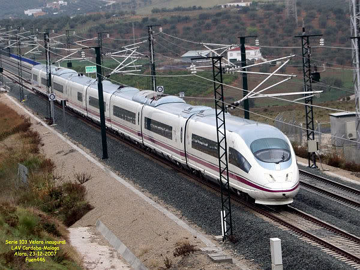

2014-10-09 20:06:00
中共是後進國家，對比於世界先進的工業强國，其主要的優勢在於對資金和人力的大規模動員能力。經過35年的努力，在若干對資金和技術人力要求很高的重工業，已經獲得了重大的突破。一般人的印象中最明顯的，大概是高鐵。不過中共的高鐵技術主要靠最近十年從德日法直接引進技術，雖然已經消化吸收，其尖端技術程度仍然只與原產國大略持平。例如其最先進的列車CRH-380B基本上就是德國Siemens的Velaro E。德國人轉移了全部技術之後，到現在還是能出口不少零件（如剎車制動器），並没有吃大虧。在一些一般消費者不會注意到的工業機械和厰房器材方面，中共才占有全球技術的最高點，例如港口装卸貨用的龍門吊車，超大型鍛壓機等等。不過在整個工業領域都領先的，莫過於電力技術，包括電力傳輸、水力發電、核能發電和火力發電，中共都已經或即將青出於藍。今天我就簡單談談燃煤火力發電。 
德國Siemens的Velaro E，原本為西班牙高鐵系統而設計，2007年服役，最高設計营運速度為每小時380公里。2009年開始技術轉移給中國北車，成為CRH-380B。
現代的燃煤發電技術基本上是燒煤把水加熱之後產生蒸汽來推動蒸汽輪機。如同所有的熱機，其工作温差比值越大，效率就越高。因為工作温差的低限就是室温，所以要提高效率，就必須提高蒸汽温度。歷史上，在二戦後，首先進步到超臨界蒸汽系統，也就是温度和壓力超過了水的液氣臨界點（374 °C，218大氣壓）。後來最高温度先提升到500°C，又在最近幾年提升到了600°C，所以稱為超超臨界技術。原本荷蘭和日本在這個領域最領先，其超超臨界燃煤發電厰的最高效率達到了43%。但是中共雖然到2002年才開始這方面的研究，在2006年才有第一座600°C級超超臨界電厰，可是在2008年，上海外高橋第三發電厰（簡稱“外三”）的两座先進超大型1000兆瓦（MW）火電機組就正式投產，把最高效率提高到了45%，並且持續領先至今。目前中共的研究人員正在努力突破700°C的超超臨界技術，預計在五年以内，將把最高效率進一步提高到50%；這將超越由Siemens保持的天然氣火力發電燃氣輪機的世界紀錄，成為世界效率最高的單循環熱機。
上海外三的燃煤機組不但效率最高，其脱硝脱硫的技術都是世界第一，所以它也是全球最乾淨的燃煤火電厰。中共總理李克强在2014年開始大力整治空氣污染，除了關閉老舊的煉鋼和水泥工業之外（生產水泥用煤很多而效率極低），最重要的就是要改進燃煤火電厰。在年初舉辦的中共國家能源委員會會議上，李克强正式宣布在2015年開始的十三五（第13個五年計劃）期間，必須把全國的燃煤火力發電厰都提升到外三的技術水準，隨即中共的五大發電集團中的三個就開始着手。到了七月1日，中共國務院對所有2012年以前，也就是只有两年舊的，所有燃煤火電厰執行世界史上最嚴格的大氣污染物排放標準，於是最後两個發電集團也不得不跟進。目前的主要問题是1000兆瓦級的火電機組太大了，不能開開關關來對應用電量在一天内的變動。這項任務適合由小型的天然氣火力發電厰來擔任，而中共並没有像美國那様的大量可輕易開發的頁岩氣，所以必須從俄國進口天然氣，這個三十年5000億美元的合約在今年四月已經簽了。
中共最新的燃煤火電技術突破在於褐煤。褐煤是煤化不完全的煤，雜質很多，尤其是含水量達36%，用起來效率很低。但是褐煤占世界煤礦總儲量的40%，中國總儲量的13%。如果能够高效脱水，對能源問題的解決將是一大進步。在2014年九月11日，位於内蒙的華能公司匯流河電廠正式啟用新一代的褐煤脱水技術，可以高效脱出褐煤含水量的一半以上，不但大幅增高褐煤發電的效率，而且可以使電厰的用水自給自足，從此褐煤電厰不必建在河邊。這是將嘉惠眾多低開發國家的福音。
相對的，美國不但不再投資在燃煤技術上，而且由於發現了世界第一的頁岩油和頁岩氣礦藏，已經積極地展開反煤電技術的宣傳戦（詳見這篇刊在今天的紐約時報上的文章：http://www.nytimes.com/2014/10/10/world/asia/chinas-plan-for-regional-development-bank-runs-into-us-opposition.html?_r=0），以作為打撃中共的經濟和外交手段。當然，最後最吃虧的，是南亜和非洲的落後國家；他們的財政是負擔不起進口的石油和天然氣的，一旦燃煤火電也被打倒，他們將永遠也無法提供足够的電力，任何工業化的希望也成為畫餅。這對美國來說，是一舉两得。對有良知的人類來說，則不是最理想的結局。